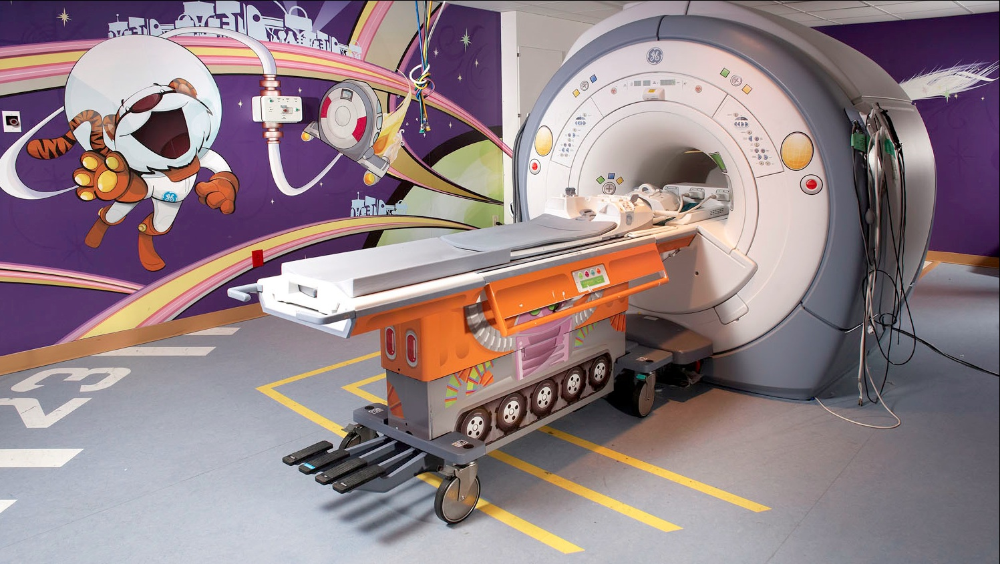
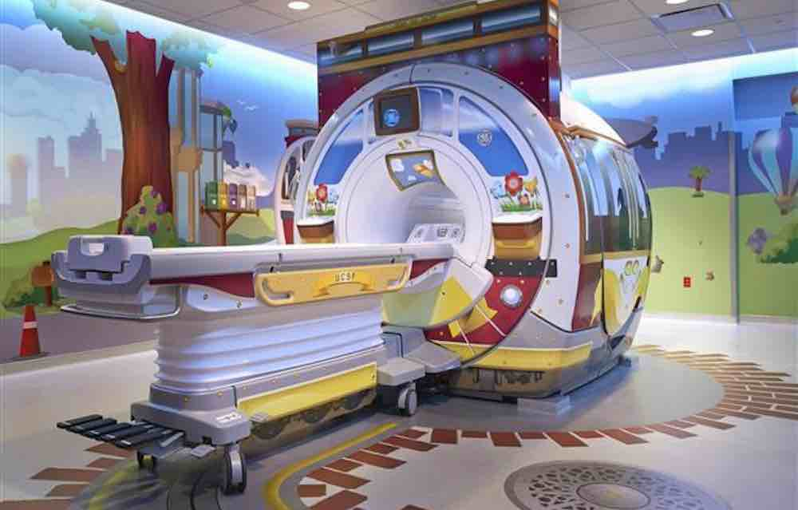

Session 2
Observation Debrief +
Team Formation
Design Thinking for MBAs (Hybrid Section)
Today's Plan
Morning
Observation Tools
Duct Tape debrief, AEIOU framework
Field Trip
AEIOU Live
METRORail ride, paired observation
Afternoon
Project 2 Launch
Scenarios, teams, research planning
Three arcs, one through-line: learning to see what's actually happening before deciding what it means.
Find the Duct Tape
You've been looking for workarounds and improvised fixes since Session 1. What did you find?
- What's the fix?
- What's the real problem underneath?
- Why hasn't the real fix happened?
3-4 volunteers share with the class
AEIOU: An Observation Framework
A = Activities
What are people doing? Tasks, routines, sequences?
E = Environments
What's the space like? How does it shape behavior?
I = Interactions
Between people? Between people and objects or systems?
O = Objects
What tools, artifacts, devices are present? What's missing?
U = Users
Who's here? Who's NOT here? Different types?
In consulting, this is one way to structure a site visit. In product development, it's a useful lens for documenting user behavior.
AEIOU Applied
Look at your TETHER notes. Which of these five did you naturally gravitate toward? Which did you miss?
REFLECT
Most people over-index on Activities and under-index on Environment and Users. Where did you land?
Design Ability: Move Between Concrete and Abstract. AEIOU helps you do this. You zoom into a specific interaction, then zoom out to ask what it means for the system.
Train Ride: AEIOU in the Field
You just learned the AEIOU framework from your own notes. Now use it live.
- Pair up. You'll observe together and compare notes after.
- Use AEIOU on everything you see: the walk, the platform, the train, the riders, the stations.
- We ride 3 stops north and come back. About an hour total.
- One question to hold: who was this system designed for, and who's using it right now?
Fare note: Tap a credit card or phone at the platform validator before boarding ($1.25).
Field Trip Debrief: What Did You See?
Share one AEIOU observation from the ride.
- What did you notice in each category?
- What surprised you?
- Who was this system designed for, and who's using it right now?
Field Trip Debrief: The Space Knob
DISCUSS
How was observing on a train different from your TETHER?
DISCUSS
What did the E category reveal about the U category?
"In design, space is a variable you can control. I changed yours today. That's a tool you can use."
From Observation to Problem
"In design, space is a variable you can control. I changed yours today. That's a tool you can use."
Take one observation from the ride. Turn it into a problem statement:
"The problem I observed is X because Y."
- Is that a symptom or a root cause?
- What's the underlying system?
- What would you need to investigate further?
The Problem
- Doug Dietz, industrial designer at GE Healthcare. Two years designing a new MRI scanner.
- Went to see it installed. Watched a little girl walking toward his machine, crying. A nurse was waiting with sedation.
- 80% of pediatric patients required sedation. Not because the scan hurt. Because the experience was terrifying.
A cold room, loud sounds, a giant machine, strange instructions from strangers.
What a child sees walking into this room.
GE Adventure Series
The Observation
- Dietz went to Stanford's d.school, learned design thinking, then went back to the field.
- But not to the hospital first. He went to a daycare. Watched how kids interact with unfamiliar environments.
- Shadowed child life specialists. Interviewed families, doctors, nurses, technicians.
Key finding: The machine wasn't the problem. The room was the problem. The hallway was the problem. The entire environment was designed for the machine, not for the person inside it.
GE Adventure Series
The Solution
- Themed decals on existing rooms: pirate ships, jungle safaris, space voyages
- Technicians got scripts: "Hold very still so the pirates don't find you."
- Same machine. Completely different experience.
- Sedation rates: 80% down to roughly 10%. Patient satisfaction up 90%.
The fix cost a fraction of a hardware redesign. That's what observation can do.
GE Adventure Series
Same Machine, Different Room

Space Adventure

City Adventure
The entire environment was designed for the machine, not for the person inside it.
Read the full story: From Design Thinking to Creative Confidence (IDEO U)
Project 2: The Journey
Today
Teams +
Scenarios
→
Session 3
Stakeholder Map +
Research Plan
→
2 Weeks
Distributed
Fieldwork
→
Session 4
Synthesize +
Causal Loops
→
Session 5
Present +
Stress Test
→
Session 6
Reflect
Your team picks a scenario today, investigates it in the field, then presents a systems-level analysis of what you found.
Project 2 Scenarios
Scenario A
The First 90 Days
How do new employees learn to navigate an organization?
Scenario B
Small Business Friction
What makes running a small business harder than it needs to be?
Scenario C
The Feedback Gap
How do organizations learn what's not working?
Scenario D
Access Barriers
Why can't people access services designed for them?
Scenario E
Volunteer Experience
What makes volunteering sustainable, or not?
Scenario F
Mission vs. Operations
How do mission-driven organizations navigate competing pressures?
Activity: The "Why?" Interview
In TETHER and on the train, you practiced observation: watching without asking. Now you add a new tool: the empathy interview.
ROUND 1
Silent Listening
Ask your partner: "Tell me about a time you had to figure something out with no instructions."
Your partner talks. You only listen. No words, no follow-ups. Just nods, eye contact, leaning in.
2 min each, then switch roles
Round 2: Only "Why?"
ROUND 2
Same topic, same partner. After each response, you can only ask "Why?"
Nothing else. Just "Why?"
2 min each, then switch roles
Notice how one word can unlock a deeper layer. "Why?" forces the speaker past their rehearsed answer.
Round 3: Open-Ended Questions
ROUND 3
Same topic, same partner. Now you can ask any open-ended question.
No yes/no questions. Follow your curiosity. Go where the conversation takes you.
2 min each, then switch roles
Notice the difference. You now have silence, "why?", and open questions in your toolkit. Which got you the most interesting response?
Reflection: The "Why?" Interview
- How did that feel? What was challenging?
- When did the conversation get interesting?
- What surprised you about what you heard?
- How did silence change the dynamic?
- Which round produced more honest responses?
Most people find Round 1 harder but more productive. Silence creates space for the other person to think. That discomfort is where the real answers live.
Empathy Interview Principles
LISTEN
More than you talk. Your job is to understand their world, not explain yours.
FOLLOW CURIOSITY
When something surprises you, go deeper. "Tell me more about that."
STORIES, NOT OPINIONS
"Tell me about a time when..." beats "What do you think about..."
EMBRACE SILENCE
After they answer, wait. They'll often fill the silence with something more interesting.
NO LEADING QUESTIONS
✗ "What's frustrating about X?"
✓ "How do you experience X?"
Choosing Your Subject
A scenario is a broad problem space. A subject is your team's specific investigation within it.
Good subjects are:
- Bounded: one organization, one location, or one population
- Accessible: you can reach real stakeholders
- Curious: you genuinely want to know the answer
Examples:
A + "How do new nurses navigate their first rotation at a community hospital?"
B + "What operational workarounds do independent coffee shop owners rely on daily?"
D + "Why do eligible families in one school district not use the free tutoring program?"
Your team's combined geography, industries, and networks are your research advantage. Map them before you pick.
Scoping Your Investigation
Too Broad
- "How do nonprofits work?"
- "What's wrong with healthcare?"
- "Why is onboarding broken?"
Well-Scoped
- "How do new nurses navigate their first rotation at a community hospital?"
- "Why do eligible families in one district not use free tutoring?"
- "What workarounds do food truck owners use daily?"
The test: Can you name the specific person you'd interview? Can you get to them in two weeks? If yes, your scope is right.
Team Work: Map What You Know
PHASE 1 (15 min)
- What do you already know about this problem? Write it down.
- What assumptions are you making? Be honest about what you're guessing.
- Who are 4-5 potential stakeholders? Think beyond the obvious. Include at least one extreme user: someone at the edges of this system.
An extreme user experiences the problem at higher intensity or frequency than most. A daily bus rider, not an occasional one. A first-week employee, not a five-year veteran.
Team Work: Map Your Reach
PHASE 2 (15 min)
Go around the team. Each person answers:
- Where do you work? What organizations are you connected to?
- What neighborhoods, cities, or communities do you move through?
- Who could you realistically observe or interview in the next two weeks?
Build a combined map of your team's access. This is your research asset.
Team Work: Scope Your Subject
PHASE 3 (15 min)
Write your subject in one sentence. Then run it through these tests:
- The Person Test: Can you name the specific type of person you'd interview? If not, narrow it.
- The Two-Week Test: Could your team investigate this in two weeks? If not, narrow it.
- The Access Test: Can at least two team members reach relevant stakeholders from their own context? If not, pivot.
Read your one sentence aloud to another team. If they can't tell you who you'd talk to, it's too broad.
Looking Ahead
- A02: Problem Reflection (individual) due Session 3 (400-600 words on your observation experience)
- Session 3: Thursday, March 12, 6:30-8:00 PM, online (Zoom)
- Focus: Stakeholder mapping and distributed research planning
- Exchange contact info with your team before you leave today
Between now and Session 3, keep your notebook active. Find the Duct Tape entries, observations from your daily context, questions about your scenario. The notebook is your research instrument.
Design Abilities: Today's Progress
Learn From Others
TETHER debrief, field trip observation, interview practice
Synthesize Information
Comparing notes, problem framing from observations
Move Between Concrete and Abstract
AEIOU framework, field trip debrief
Navigate Ambiguity
Team formation, scoping a problem you don't understand yet
Experiment Rapidly
Build and Craft Intentionally
Communicate Deliberately
Before You Go
Find the Duct Tape: Keep collecting workarounds this week.
- Make sure you have your team's contact info
- A02: Problem Reflection (individual): 400-600 words, due Session 3
- Session 3: Thursday, March 12, 6:30 PM, Zoom